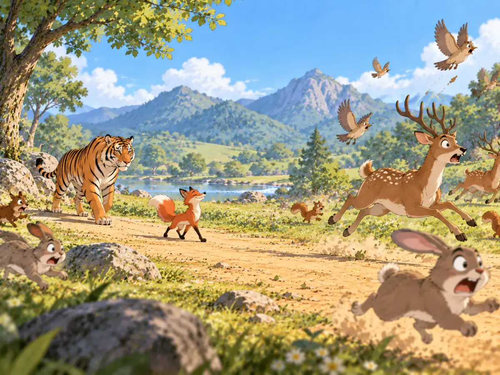

狐假虎威
The Fox Who Borrowed the Tiger’s Power

The fox walks proudly in front, but the other animals are really afraid of the tiger behind him.
很久以前，一只老虎在森林里抓住了一只狐狸。老虎正准备把狐狸吃掉，狐狸忽然大声喊：“你不能吃我！”老虎停了下来。“为什么？”狐狸一本正经地说：“老天派我来管理所有动物。你要是吃了我，就是不听老天的话！”老虎听了，有点不相信。狐狸便说：“你跟在我后面走一趟，就知道了。”于是，狐狸昂着头走在前面，老虎紧紧跟在后面。一只鹿看见它们，转身就跑。兔子钻进草丛，鸟儿飞上天空。一路上，所有动物一见到它们，都赶紧逃开。狐狸更加得意了。“看见了吧？”它说，“大家都怕我！”老虎看看四周，竟然真的有点相信了。可是，那些动物根本不是害怕狐狸。它们害怕的是狐狸身后的老虎。这就是“狐假虎威”的故事。这里的“假”不是“假的”，而是借用的意思。“狐假虎威”，就是狐狸借着老虎的威风吓唬别人。今天，如果一个人自己并没有那么大的力量，却借着更有力量的人来吓唬别人，我们就可以说他是在“狐假虎威”。狐狸看起来很威风。可是，那份威风从来都不是它自己的。
Long ago, a tiger caught a fox in the forest. Just as the tiger was about to eat him, the fox cried, “You can’t eat me!” The tiger stopped. “Why not?” “The ruler of Heaven sent me to lead all the animals,” said the fox. “If you eat me, you will be disobeying Heaven.” The tiger was not sure he believed him. So the fox said, “Follow me. You’ll see.” The fox walked proudly through the forest, with the tiger close behind. A deer saw them and ran. Rabbits dashed into the bushes. Birds flew from the trees. Everywhere they went, animals hurried away. The fox lifted his head. “See?” he said. “They’re all afraid of me.” The tiger looked around and began to believe him. But the animals were not afraid of the fox at all. They were afraid of the tiger walking behind him. This story gave us the expression hú jiǎ hǔ wēi—“the fox borrows the tiger’s power.” Today, people use it when someone seems powerful only because a stronger person is backing them up. The fox looked very impressive. But the power was never really his.